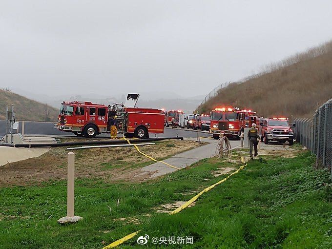

你们这些看外盘预测A股的，还是有点naive。还有几个交易日，弄不好外盘在A股开盘前已经暴跌暴涨回去了。我个人没什么期待，涨了挺好，跌了赚更多。多大点事啊也值得焦虑@ETF拯救世界:你焦虑吗。一个月前就说了：今年大幅波动。不波动怎么赚钱…
回复@babalu51:图片评论 评论配图 //@babalu51:e大今天干了啥正经事//@ETF拯救世界:别管做不做，人家话说出来了，意愿表达了，咱得说声感谢。再看看咱们自己的台湾同胞@网易财经:【日本外相：#日本愿全力帮助中国抗击疫情#】日本外相茂木敏充表示，日方愿同中方一道，共同应对疫情威胁，向中方提供全方位支持帮助。 @凤凰李淼 凤凰李淼的微博视频 2239万次播放 00:09
别管做不做，人家话说出来了，意愿表达了，咱得说声感谢。再看看咱们自己的台湾同胞@网易财经:【日本外相：#日本愿全力帮助中国抗击疫情#】日本外相茂木敏充表示，日方愿同中方一道，共同应对疫情威胁，向中方提供全方位支持帮助。 @凤凰李淼 凤凰李淼的微博视频 2239万次播放 00:09
永远不知道明天和意外哪个先来。珍惜当下。@央视新闻:#球星科比坠机身亡#【#美国一直升机坠毁致5人死亡#】美国体育媒体ESPN、新闻媒体ABC及娱乐新闻媒体TMZ等多家媒体报道，NBA球星科比·布莱恩特在当地时间26日，于加利福尼亚州洛杉矶县卡拉巴萨斯的一场直升机坠机事故中身亡。据洛杉矶当地警方称，有五人在直升机坠毁中死亡。（总台央视记者赵淼 殷岳） 